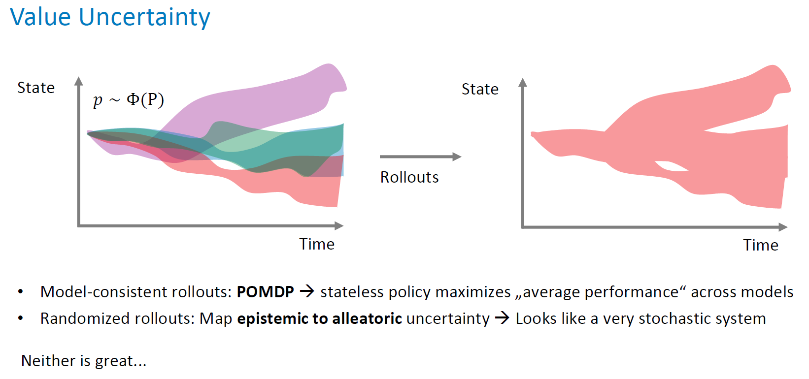

Caveats of Deep Learning
Odalric-Ambrym Maillard
HORIBA
April 22, 2025

Road map
- Brittle performance for small disturbances
- Uncertainty
- Replay buffer Hazard
- Model with Distribution
- Robust learning
A brittle learning
A brittle learning: Explanation
Understanding uncertainty
Model environment
Model environment
Model based policy learning pipeline
Puzzling performance
A core issue with replay buffer
